| 1.1 마이페이지 |
| 마이페이지란 다양한 스킨이 제공되며 사용자의 기호에 맞게 자주 가는 페이지들을 미리 정의하여 나만의 페이지를 구성하고 관리 할 수 있다. |
| 1.1.1 마이페이지 실행 |
| 가. 우측 상단메뉴의 MYPAGE를 클릭하면 MyPage 화면이 실행됨. |
| 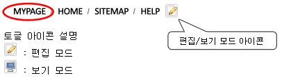 |
| 마이페이지는 편집모드와 보기모드의 두 개의 모드로 구성되어 있다. 기본은
보기모드로 적용되어 있고, 마이페이지를 편집하고자 할 때는 편집모드로 변환하여 마이페이지를 편집하여야 한다. 편집모드 : 마이페이지를 구성하고 편집하는 기능을 제공한다. 보기모드 : 편집된 마이페이지를 적용하여 마이페이지 기능을 제공한다. |
| <그림1. 마이페이지 초기화면> |
| 마이페이지 초기화면은 그림3과 같이 생성되며 편집아이콘을 이용하여 편집을 할 수 있다. |
| 1.2 마이페이지 편집 |
|
가. 마이페이지 화면에서 우측 상단의 편집 아이콘을 실행하면 편집 모드로 전환이 됩니다. |
| <그림2. 마이페이지 편집모드> |
| 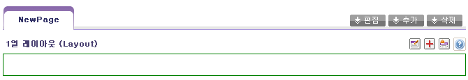 |
| 위의 그림4 에서 보는 바와 같이 NewPage 1개가 생성되어 있으며 NewPage를 편집하여 나만페이지를 구성할 수 있고, 또한 새로운 페이지를 추가할 수도 있다. |
| 아이콘
설명 : 마이페이지 편집 : 마이페이지 추가 : 마이페이지 삭제 |
| 1.2.1 마이페이지 편집 |
| 가. 편집하고자 하는 마이페이지를 선택 후 마이페이지 편집 버튼 실행 가. 마이페이지 이름 변경 |
| <그림3. 마이페이지 편집 과정> |
| 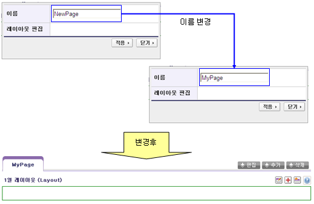 |
| 이름을 변경하고 적용하면 마이페이지 이름이 바뀐다. |
| 1.2.2 마이페이지 추가 |
| 가. 마이페이지 추가 버튼 실행 나. 이름 입력 및 레이아웃 선택 |
| <그림4. 마이페이지 추가 과정> |
| 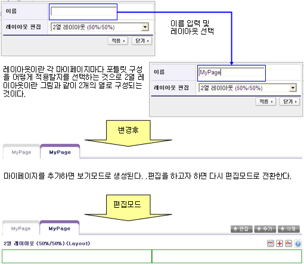 |
| 레이아웃 리스트 |
| 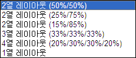 |
| 1.2.3 마이페이지 삭제 |
| 가. 마이페이지 삭제 버튼 실행 나. 사용자 삭제 확인 후 삭제됨 Note : 마이페이지 삭제시 기본 첫 페이지는 삭제를 할 수가 없다. |
| 1.2.4 마이페이지 레이아웃 및 포틀릿 편집 |
| 마이페이지의 레이아웃 편집 및 포틀릿 추가는 편집모드로 변경한 후에 아이콘을 이용하여 작업을 합니다. |
| <그림5. 아이콘 설명> |
| 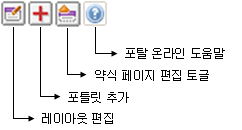 |
| 1.2.3.1 마이페이지 레이아웃 편집 |
| 가. 마이페이지 레이아웃 편집 버튼 실행 그림7에서 설명한 레이아웃 편집 아이콘을 실행한다. 나. 마이페이지 레이아웃 편집 편집아이콘을 실행하여 레이아웃을 변경 할 수 있다. |
| <그림6. 레이아웃 변경 예> |
| 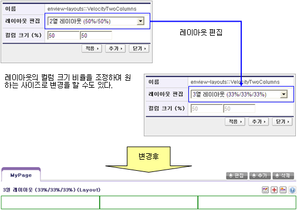 |
| 1.2.3.2 포틀릿 추가 |
| 가. 포틀릿 선택 |
| 포틀릿 추가 아이콘을 실행하여 아래 그림9와 같이 선택 화면에서 카테고리를 선택한 후에 검색버튼을 사용하여 검색, 검색된 포틀릿을 원하는 레이아웃에 마우스로 선택 후 끌어다가 놓으면 자동적으로 삽입이 된다. |
| <그림7. 카테고리 검색 및 포틀릿 선택> |
| 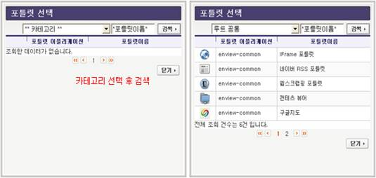 |
| 나. 포틀릿 삽입 |
| <그림8. 포틀릿 삽입> |
| 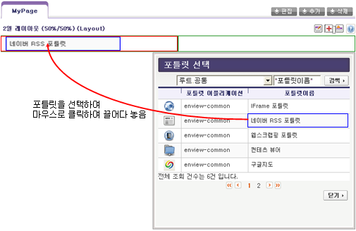 |
| 다. 포틀릿 위치 이동 |
| <그림9. 포틀릿 이동> |
| 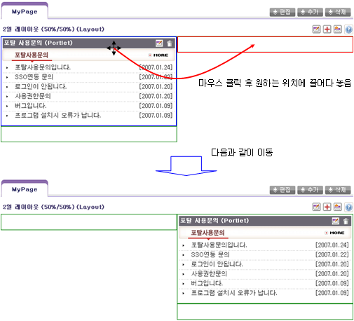 |
| 라. 포틀릿 편집 |
|
<그림10. 포틀릿 편집 아이콘> |
| 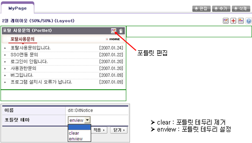 |
|
포틀릿 테마란 각각의 포틀릿의 테두리를 설정 할 것인지를 지정하는 기능으로 enview 란 포틀릿 테마를 제공한다. |
| 마. 포틀릿 삭제 |
| <그림11. 포틀릿 삭제 아이콘> |
| 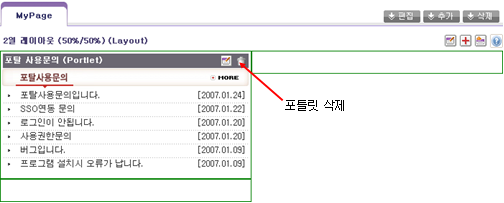 |
| 포틀릿 삭제 아이콘 - 휴지통 모양 - 을 클릭하면 삽입된 포틀릿을 제거할 수 있다. |
| 1.2.3.3 약식 페이지 편집 토글 |
| 토글 아이콘을 클릭하면 아래 그림과 같이 타이틀만 보여진다. 다시 토글 아이콘을 클릭하여야만 내용을 볼 수 있다. |
| <그림12. 약식 페이지> |
| 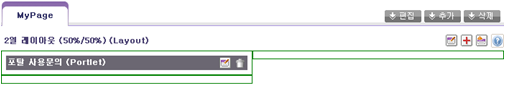 |
| 1.2.3.4 포탈 온라인 도움말 |
| 포탈 온라인 도움말 아이콘을 클릭하면 마이페이지 관련 도움말을 볼 수 있다. |